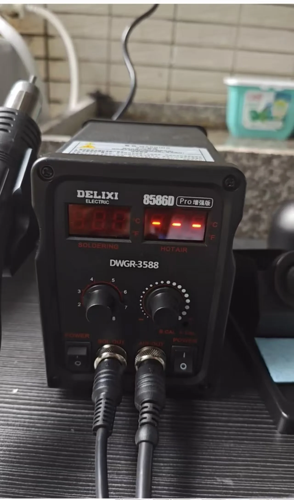
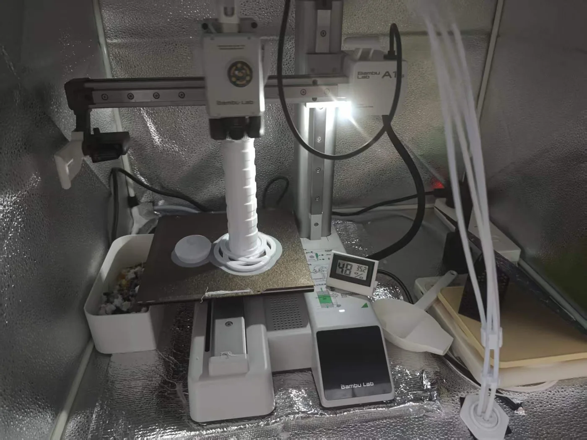

热风枪 · 8586D 二合一
调板子的时候它是我的第二双手。贴片阻容焊歪了、功率管热坏了，风枪吹下来重焊，比整块板换掉快得多。
二合一省掉了换台子的工夫——烙铁补焊、风枪拆焊，同一张桌上就能收尾。拆焊这件事，快和干净比什么都重要。
从原理图到整机跑起来，我都做了些什么

调板子的时候它是我的第二双手。贴片阻容焊歪了、功率管热坏了，风枪吹下来重焊，比整块板换掉快得多。
二合一省掉了换台子的工夫——烙铁补焊、风枪拆焊，同一张桌上就能收尾。拆焊这件事，快和干净比什么都重要。

掌上宠物的白色外壳、平衡车的结构件，都是这台机器打的。
结构件不用等快递的好处是：改一版模型，吃过饭就能拿在手上试装。小装置的很多设计，是在摸到实物之后才定下来的——尺寸差一点，屏幕就装不进去。
机器人工程本科 2026 届